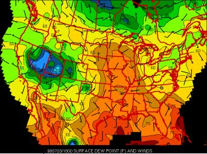

Dew Point Help Page
The dew point is the temperature at which the air must be cooled to produce condensation. The dew point effects how the air feels to you. If dew point readings are less than 50 degrees fahrenheit, the air will feel dry and comfortable. However, dew points in the 60's and 70's indicate an airmass with a lot of moisture. When forecasting for severe weather, you should look for dew points of at least 60 generally. During early spring and late fall, however, dew points may only need to be in the 50's for severe weather to occur.
On the map below, higher dew point readings are indicated by the red and orange colors, while the lower dew point readings are indicated by the blue and green colors.
